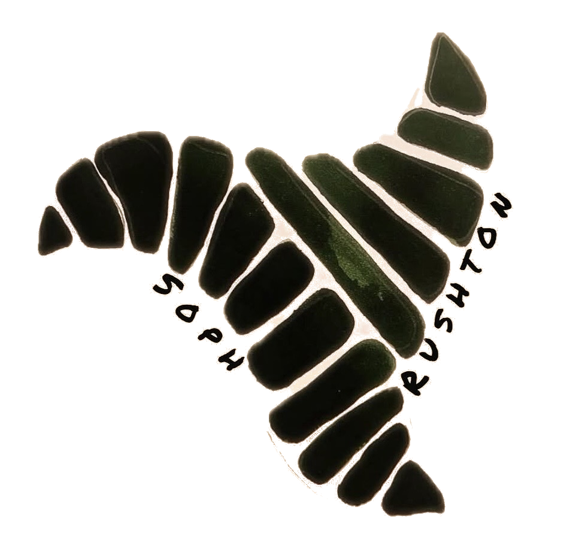

About
Soph Rushton is an artist whose work explores the quiet languages found throughout the natural world. Based between Amsterdam and London, she studied at the University of the Arts London (UAL) and has worked as a freelance pattern and textile designer for the past 15 years. Her practice begins with a curiosity about how living systems grow, organise, and repeat, and how these rhythms can be translated into visual form.
Organic structures found in nature are a continual source of inspiration. Branching formations, cellular systems, and spiralling growth sequences such as the Fibonacci sequence influence the way forms develop and expand within her work. Through repetition, symmetry, and gradual transformation, each composition emerges with its own rhythm, balancing structure with the subtle unpredictability of natural processes.
Her practice is also informed by Indigenous textile traditions such as Amazonian kene and Andean tocapu, where geometry functions as a system of knowledge and identity, carrying stories, ecological understanding, and cultural memory.
Today, many of these textile languages are slowly disappearing. Urban migration draws younger generations away from traditional practices, while industrial production replaces the time and care of hand weaving. Tourism markets often simplify complex visual systems, detaching them from their deeper meaning. At the same time, climate change and deforestation threaten the plants and fibres these traditions depend upon.
At the centre of Soph’s practice is the creation of bespoke works for individuals. Each piece becomes a personal visual language shaped by memory, identity, and connection, incorporating initials, symbols, and motifs drawn from a client’s life and experiences.
Working across ink, print, embroidery, and goldwork, Soph creates pieces that hold rhythm, story, and continuity.
